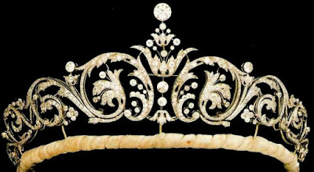
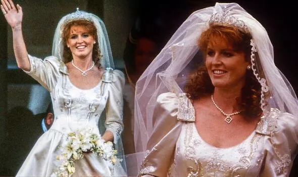

British Royal Wedding Tiaras
Queen Mary's Fringe Tiara
Spencer Tiara
York Diamond Tiara
Anthemion Tiara
Cartier Halo Tiara
Queen Mary's Bandeau Tiara
Meander Tiara
Greville Emerald Kokoshnik Tiara
York Diamond Tiara
요크 다이아몬드 티아라

착용자 :
요크 공작부인 사라

엘리자베스 2세 여왕과 그의 부군 에딘버러공의 차남 앤드류 왕자의 전부인
사라 퍼거슨
과의 결혼식 때 신부가 착용한 티아라이다.